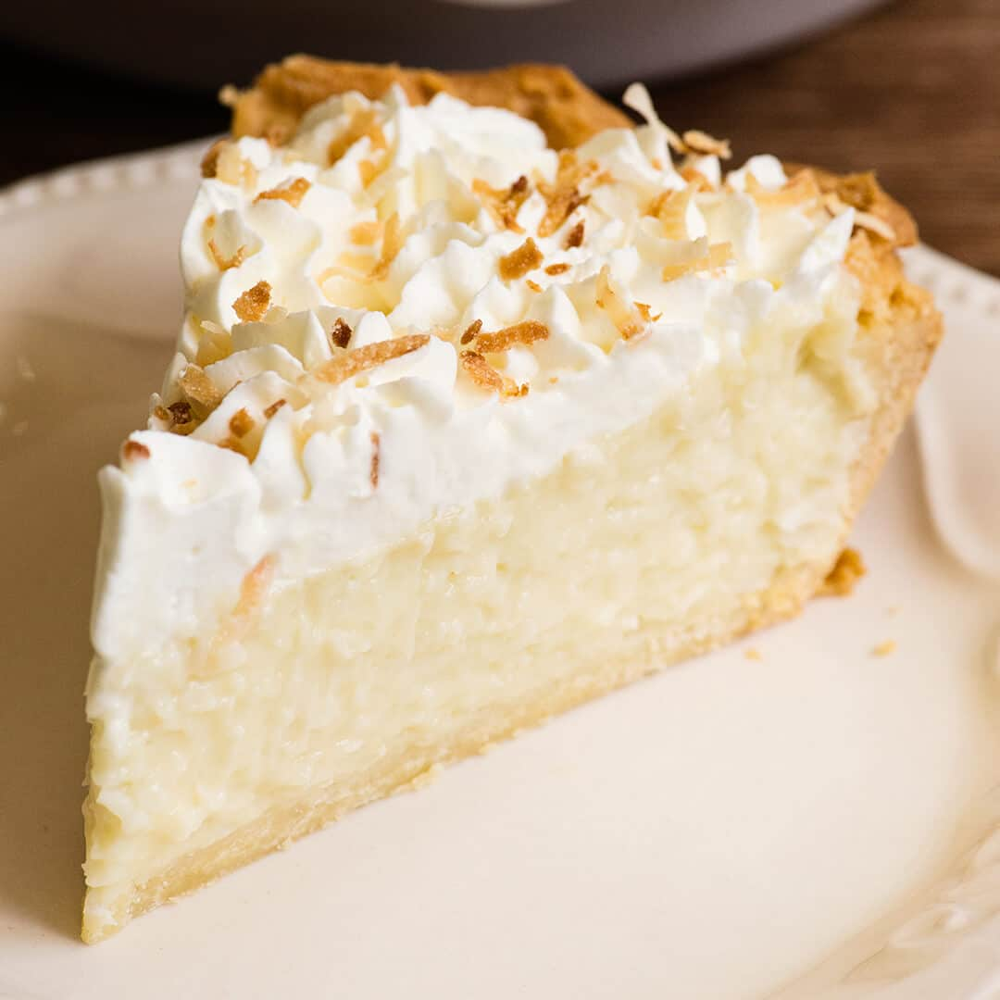

Coconut Cream Pie

Description
Coconut cream pie recipe that's tried and true. It took many years of searching and baking to find the right one, and this is it. Enjoy!
Ingredients
- 1 cup sweetened flaked coconut
- 3 cups half-and-half
- ¾ cup white sugar
- ½ cup all-purpose flour
- 2 large eggs, beaten
- ¼ teaspoon salt
- 1 teaspoon vanilla extract
- 1 (9 inch) pie shell, baked
- 1 cup frozen whipped topping, thawed
Steps
-
Preheat the oven to 350 degrees F (175 degrees C).
-
Spread coconut on a baking sheet.
-
Bake in the preheated oven, stirring occasionally, until golden brown, about 5 minutes.
-
Combine half-and-half, sugar, flour, eggs, and salt in a medium pot. Bring to a boil over low heat, stirring constantly. Continue cooking and stirring for 2 minutes more.
-
Remove the pan from the heat and stir in 3/4 cup toasted coconut and vanilla extract; reserve remaining toasted coconut to top pie.
-
Pour custard into pie shell and chill until firm, about 4 hours.
-
Top with whipped topping and reserved coconut.
Return to Home